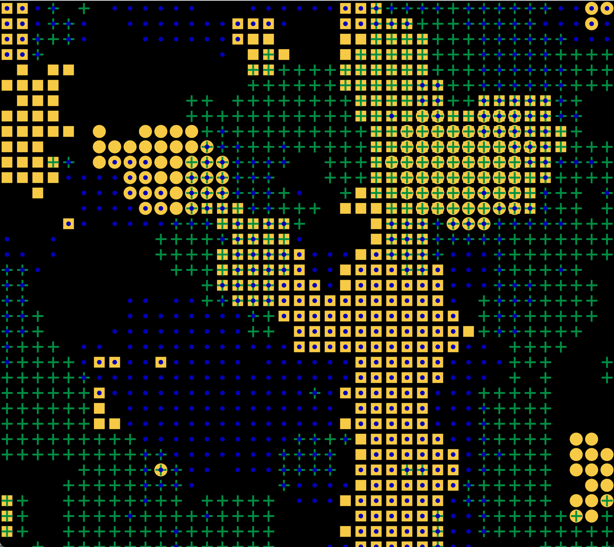
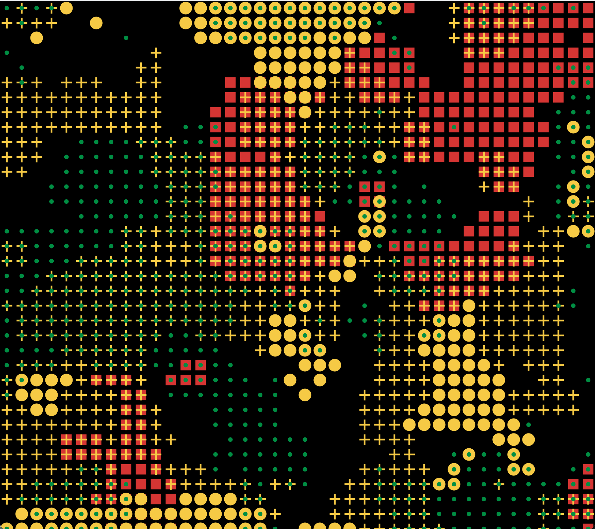
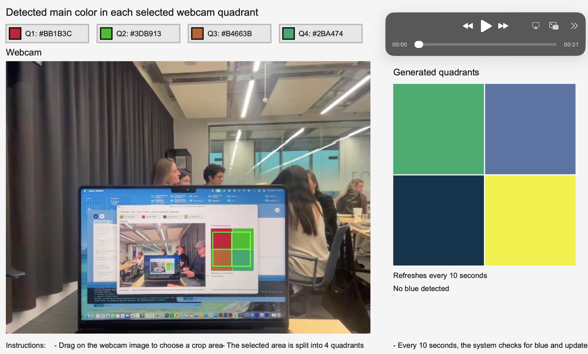
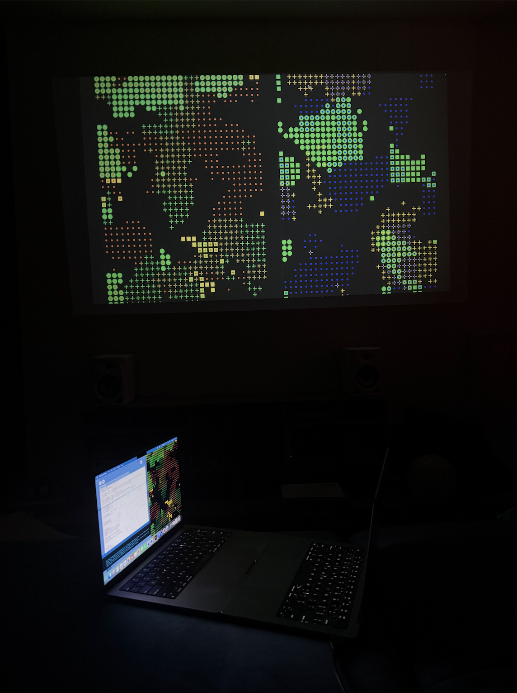
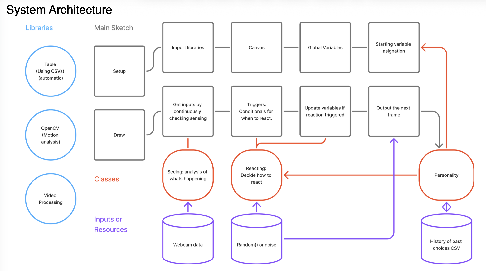

In collaberation with Gaétan Bauné, Max von Habsburg, Milan Jacobs, and Menta Neri.
Emergence is a live generative art installation that explores what can be produced when computers are considered artists with personal preferences, histories, and the capacity to be inspired by their peers. Two autonomous artworks continuously observe and react to one another, allowing their evolving styles and personalities to be shaped by what they perceive from each other.


With the rise of artificial intelligence, the separation between humans and computers has become increasingly blurred. We have seen many examples of artists using technology to complement their work, and many who rely on artificial intelligence to do most of the work itself. This led us to a simple question: what happens when a computer is not treated as a tool, but as an artist capable of being inspired?
We wanted to explore how computers could exhibit human-like traits by creating two entities whose evolving styles and personalities were shaped by what they perceived from each other.
Using Java Processing, we developed a system where characteristics such as color preferences, reactions, and personality strengths evolved over time through repeated interactions.
A major challenge was creating computational autonomy without allowing the system to collapse into repetitive behavior. Early versions reacted too quickly or gradually converged toward a single dominant color. Through extensive testing, adjustments to probabilities, reaction timing, and preference systems were introduced to maintain variation and allow each artwork to develop its own identity. We also experimented with webcam-based observation, which introduced challenges related to ambient light, screen glare, and color detection accuracy.



Skills: Material Research, Ceramic Fabrication, Glass Forming, Manufacturing Processes, Prototyping, Technical Documentation, Form Development, Negative Space Design, Collaborative Making.
Tools: Clay Modelling, Glass Blowing, Illustrator, Technical Drawing, Physical Prototyping, Kiln Firing, Mold Making.